Jak prowadzić sklep i stronę OMA — krok po kroku, bez wiedzy technicznej.
Panel to osobna strona, na którą wchodzisz tylko Ty. Klienci jej nie widzą — oni oglądają sklep pod adresem /sklep/.
/admin.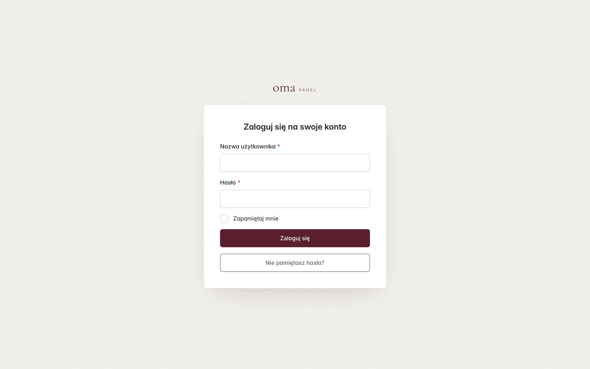
W prawym górnym rogu jest ikona sylwetki człowieka. Po kliknięciu rozwija się menu z opcją wylogowania. Warto z niej korzystać, gdy pracujesz na komputerze, do którego ma dostęp ktoś jeszcze.
Ekran dzieli się na dwie części. Po lewej jest bordowe menu — stała lista wszystkich miejsc, do których możesz wejść. Po prawej wyświetla się to, co wybrałaś.
Menu jest pogrupowane tematycznie. Kliknięcie w nazwę grupy (np. „Katalog") rozwija ją i pokazuje pozycje w środku.
| Grupa w menu | Do czego służy |
|---|---|
| Panel | Strona główna z podsumowaniem: ile sprzedano, ile jest nowych zamówień. |
| Katalog | Wszystko, co sprzedajesz: produkty, kategorie, stany magazynowe. |
| Sprzedaż | Zamówienia klientów, płatności, przesyłki oraz sposoby płatności i dostawy. |
| Klient | Lista osób, które kupiły lub założyły konto. |
| Marketing | Promocje, rabaty, opinie o produktach. |
| Konfiguracja | Ustawienia techniczne: podatki, języki, konta administratorów, edycja strony wizytówki. |
W kilku miejscach nazwa w menu różni się od tytułu na stronie — to normalne, chodzi o to samo:
| W menu widzisz | Na stronie zobaczysz |
|---|---|
| Cechy | Atrybuty produktu |
| Warianty | Opcje produktu |
| Powiązania produktów | Typy powiązań produktu |
| Sposoby wysyłki | Metody wysyłki |
| Promocje katalogu | Promocje katalogowe |
Prawie każda pozycja z menu wygląda tak samo: lista rzeczy, a nad nią przyciski. Gdy raz zrozumiesz jedną listę, zrozumiesz wszystkie.
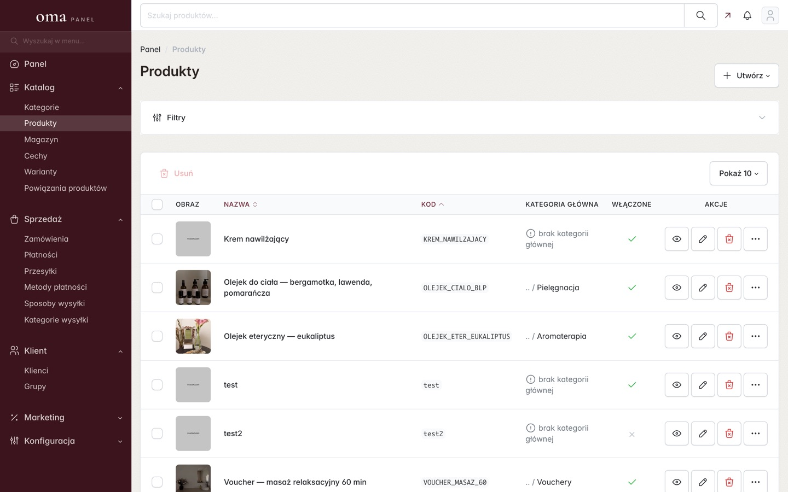
| Element | Znaczenie |
|---|---|
| Ścieżka u góry | Np. Panel / Produkty. Pokazuje, gdzie jesteś. Kliknięcie w wcześniejszy człon cofa Cię o krok. |
| Utwórz | Bordowy lub obramowany przycisk w prawym górnym rogu. Dodaje nową pozycję. |
| Filtry | Rozwijany pasek nad listą. Pozwala zawęzić listę, np. pokazać tylko zamówienia z jednego miesiąca. |
| Pokaż 10 | Ile wierszy naraz. Możesz zmienić na 25, 50 lub 100. |
| Nagłówki kolumn | Te ze strzałeczką obok nazwy są klikalne — sortują listę rosnąco/malejąco. |
| Kwadraciki po lewej | Zaznaczanie wierszy. Po zaznaczeniu można użyć czerwonego „Usuń" nad listą i skasować kilka pozycji naraz. |
| Poprzednia / Następna | Przewijanie kolejnych stron listy, na samym dole. |
| Ikona | Co robi |
|---|---|
| Oko | Podgląd — pokazuje szczegóły bez możliwości edycji. |
| Ołówek | Edycja — otwiera formularz do zmiany danych. |
| Czerwony kosz | Usunięcie. Panel poprosi o potwierdzenie. Tej operacji nie da się cofnąć. |
| Trzy kropki | Dodatkowe opcje, np. „Zobacz w sklepie". |
Zielony ptaszek oznacza, że pozycja jest aktywna i widoczna w sklepie. Szary krzyżyk — że jest wyłączona i klienci jej nie widzą.
To pierwszy ekran po zalogowaniu. Służy do szybkiego rzutu oka na to, co dzieje się w sklepie.
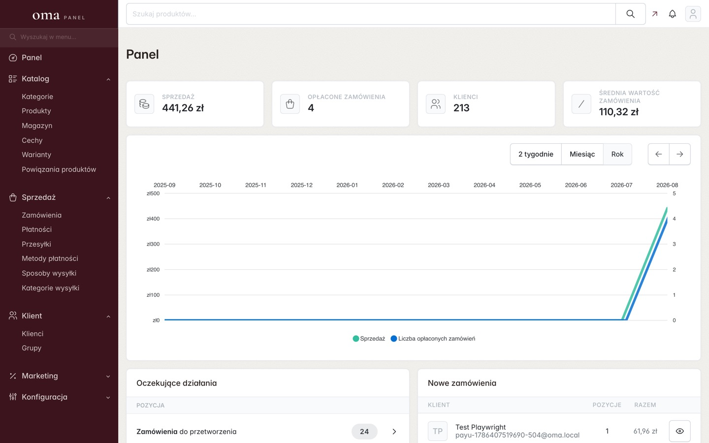
| Kafelek | Znaczenie |
|---|---|
| Sprzedaż | Łączna wartość opłaconych zamówień. |
| Opłacone zamówienia | Ile zamówień zostało faktycznie zapłaconych. |
| Klienci | Ile osób jest w bazie klientów. |
| Średnia wartość zamówienia | Ile średnio zostawia u Ciebie jeden klient. |
Zielona linia to sprzedaż w złotówkach, niebieska — liczba opłaconych zamówień. Przyciskami 2 tygodnie / Miesiąc / Rok zmieniasz zakres, a strzałkami przesuwasz się w czasie.
Oczekujące działania to Twoja lista zadań — np. „Zamówienia do przetworzenia". Liczba obok mówi, ile ich czeka; strzałka przenosi wprost na tę listę.
Nowe zamówienia to ostatnie zakupy. Ikona oka po prawej otwiera szczegóły.
Najważniejsza sekcja w całym panelu. Tu mieszka wszystko, co klient może kupić: olejki, vouchery, kosmetyki. Jeden produkt = jedna pozycja w sklepie.
| Kolumna | Znaczenie |
|---|---|
| Obraz | Miniaturka zdjęcia. Szary prostokąt z napisem „placeholder" oznacza, że produkt nie ma jeszcze zdjęcia. |
| Nazwa | To, co klient widzi w sklepie. |
| Kod | Wewnętrzny identyfikator, np. OLEJEK_CIALO_BLP. Klient go nie widzi. Musi być unikalny. |
| Kategoria główna | Do której kategorii produkt należy. Napis „brak kategorii głównej" to sygnał, że produkt trudno znaleźć w sklepie. |
| Włączone | Zielony ptaszek — produkt jest w sprzedaży. Szary krzyżyk — ukryty. |
Kliknij Utwórz w prawym górnym rogu. Rozwinie się wybór:
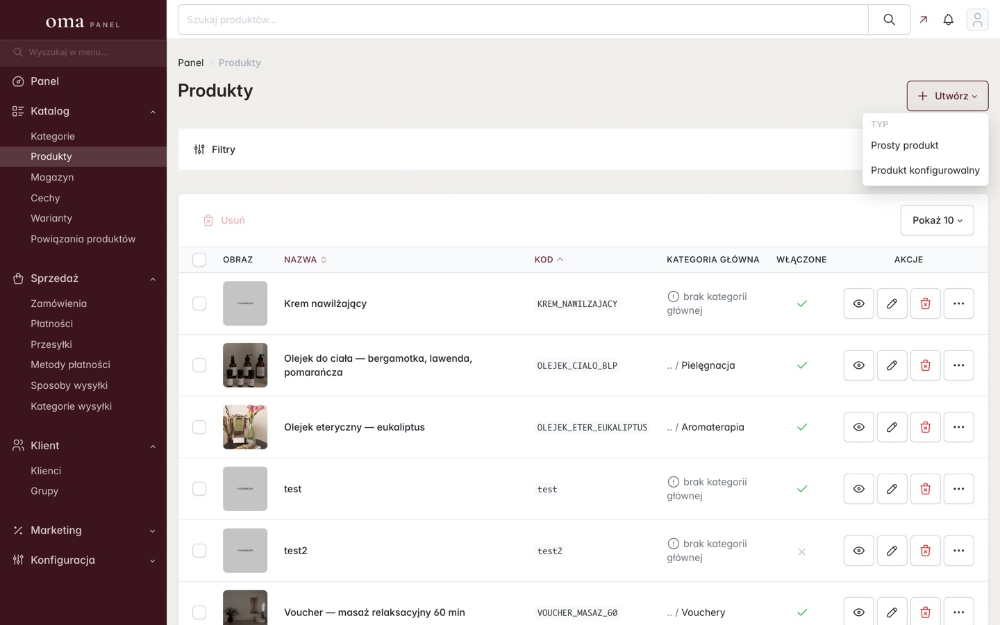
| Rodzaj | Kiedy wybrać |
|---|---|
| Prosty produkt | Produkt występuje w jednej wersji — jeden olejek, jeden voucher. To wybierasz prawie zawsze. |
| Produkt konfigurowalny | Produkt ma kilka wersji do wyboru, np. ten sam krem w pojemności 30 ml i 50 ml, każda w innej cenie. |
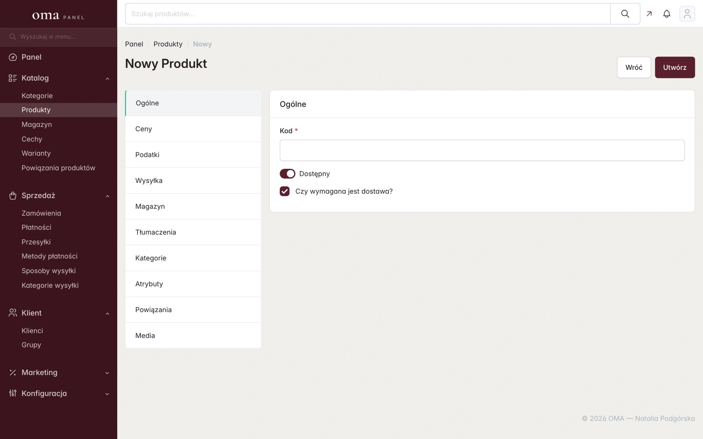
Po lewej stronie formularza jest lista zakładek. Klikasz w nie, żeby przechodzić między częściami produktu. Nie zapisują się osobno — możesz uzupełnić kilka zakładek i dopiero na końcu kliknąć Utwórz / Aktualizuj.
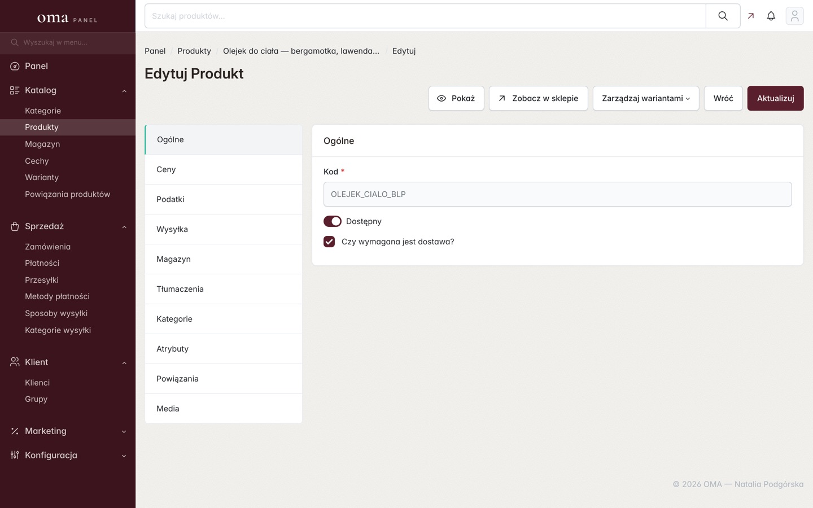
Tu wpisujesz treści, które czyta klient.
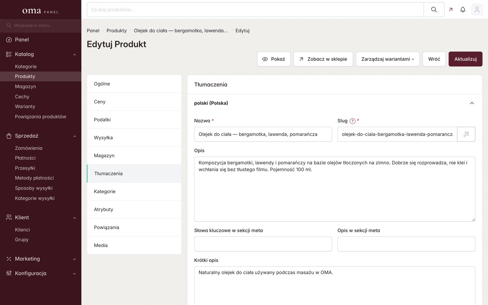
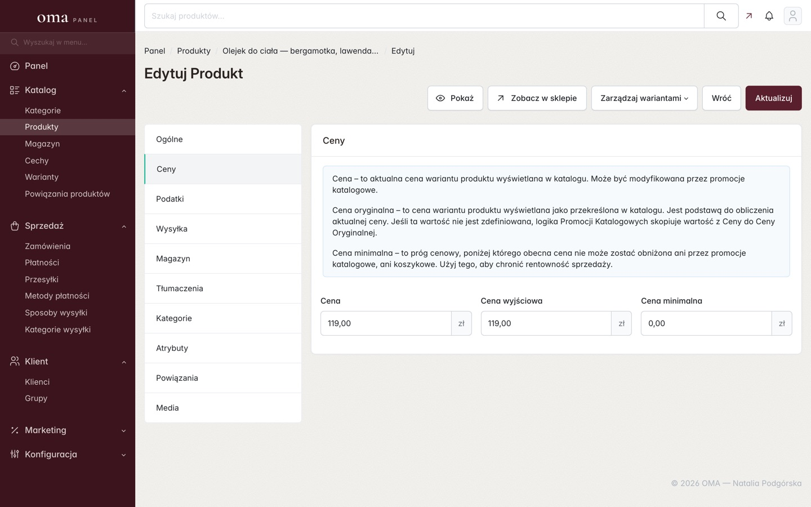
Wybierasz kategorię podatkową — dla produktów fizycznych zwykle „VAT 23%", dla usług i voucherów „Usługi". Sam procent ustawiony jest gdzie indziej (rozdział 24).
Waga, wysokość, szerokość, głębokość oraz kategoria wysyłki. Wypełniaj, jeśli koszt przesyłki ma zależeć od gabarytu. Przy jednej stałej cenie dostawy możesz zostawić puste.
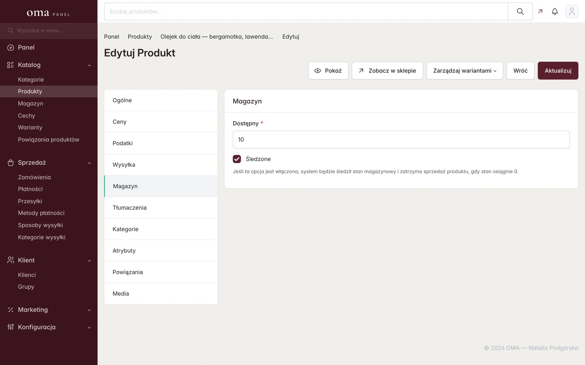
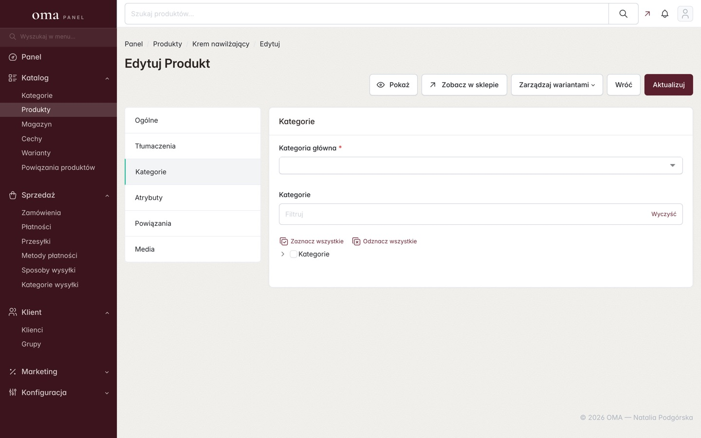
Wskazujesz, w których działach sklepu produkt ma się pokazywać. Jedna z kategorii jest główną — to ona pojawia się na liście produktów i w ścieżce nawigacji. Produkt może należeć do kilku kategorii jednocześnie.
Dodatkowe informacje techniczne, np. „Pojemność (ml): 100". Wyświetlają się jako tabelka na stronie produktu. Same atrybuty tworzy się w sekcji Cechy (rozdział 8).
Produkty polecane obok tego produktu, np. „Podobne produkty". Typy powiązań definiujesz w rozdziale 10.
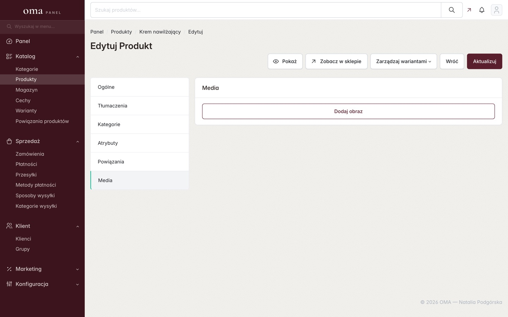
Zdjęcia produktu. Klikasz Dodaj, wybierasz plik z dysku, opcjonalnie wpisujesz typ (etykietę pomocniczą). Kolejność zdjęć decyduje o tym, które będzie główne.
| Przycisk | Co robi |
|---|---|
| Aktualizuj | Zapisuje wszystkie zmiany. Bez tego nic się nie zapisze. |
| Pokaż | Podgląd danych produktu w panelu. |
| Zobacz w sklepie | Otwiera stronę produktu tak, jak widzi ją klient. Najlepszy sposób sprawdzenia efektu. |
| Zarządzaj wariantami | Tylko przy produktach konfigurowalnych — lista wersji produktu. |
| Wróć | Powrót do listy bez zapisywania. |
Jeśli coś chwilowo nie jest dostępne, nie usuwaj produktu — wejdź w edycję, w zakładce „Ogólne" wyłącz przełącznik Dostępny i kliknij Aktualizuj. Produkt zniknie ze sklepu, ale zostanie w panelu razem z historią zamówień. Gdy wróci do oferty, wystarczy włączyć przełącznik z powrotem.
Kategorie to działy sklepu — to, po czym klient klika, żeby zawęzić ofertę: Pielęgnacja, Aromaterapia, Vouchery.
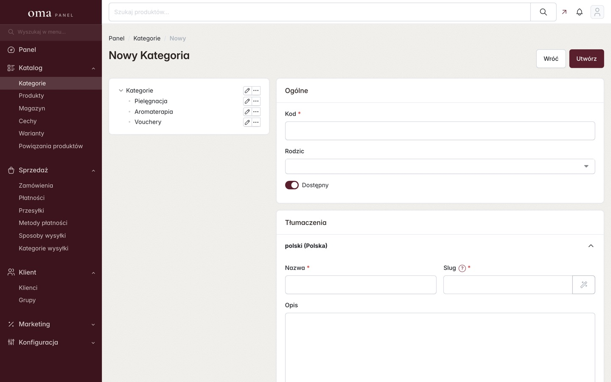
Po lewej stronie jest drzewo kategorii. Na samej górze stoi „Kategorie" — to korzeń, którego klient nie widzi; wszystkie prawdziwe działy są pod nim, wcięte w prawo. Po prawej stronie jest formularz — domyślnie pusty, gotowy do dodania nowej kategorii.
Przy każdej pozycji w drzewie są dwie ikony: ołówek (edycja) i trzy kropki (dodatkowe opcje, m.in. usunięcie i dodanie podkategorii).
swiece. Bez polskich znaków i spacji.Kliknij ikonę ołówka obok jej nazwy w drzewie. Formularz wypełni się danymi, poprawiasz i klikasz Aktualizuj.
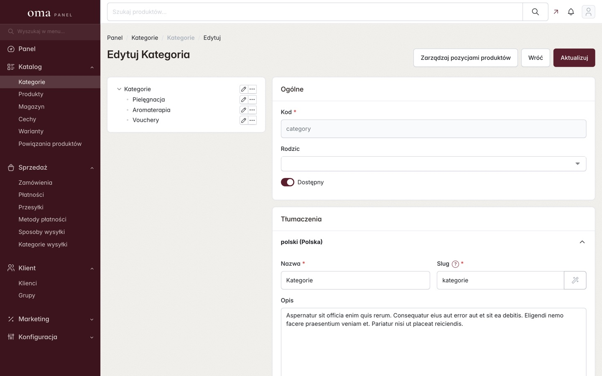
Pozycje w drzewie można przeciągać myszką, żeby zmienić ich kolejność w menu sklepu — złap kategorię i przesuń w górę lub w dół.
Zestawienie stanów magazynowych w jednym miejscu — bez wchodzenia w każdy produkt osobno.
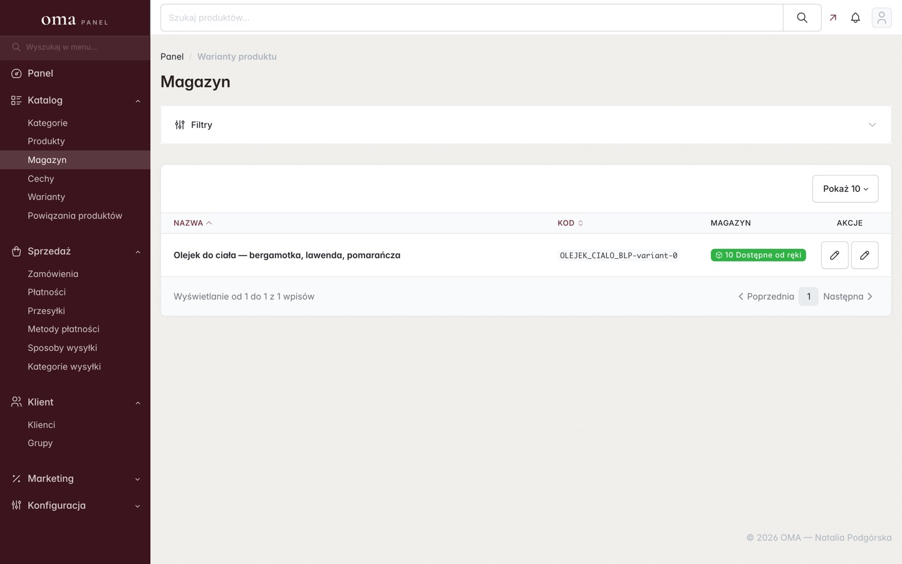
Na liście widzisz nazwę, kod oraz liczbę sztuk z opisem stanu (np. „10 Dostępne od ręki"). Pojawiają się tu wyłącznie produkty z włączoną opcją „Śledź zapas" — jeśli czegoś tu nie ma, to znaczy, że sklep nie liczy jego sztuk (tak jest zwykle z voucherami).
Cechy to dodatkowe informacje o produkcie, wypisane w tabelce pod opisem — np. Pojemność (ml), Skład, Producent.
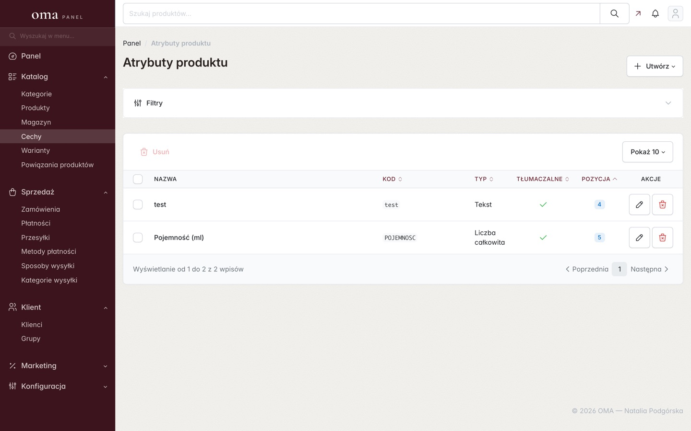
Działa to dwuetapowo: tutaj tworzysz samą cechę (np. „Pojemność (ml)"), a jej wartość dla konkretnego produktu wpisujesz w Produkty → edycja → zakładka Atrybuty.
| Kolumna | Znaczenie |
|---|---|
| Nazwa | Etykieta widoczna dla klienta. |
| Kod | Identyfikator wewnętrzny. |
| Typ | Rodzaj wartości: Tekst, Liczba całkowita, Data, Pole wyboru i inne. |
| Tłumaczalne | Czy wartość może się różnić w zależności od języka. Przy jednym języku bez znaczenia. |
| Pozycja | Kolejność w tabelce na stronie produktu — mniejsza liczba wyżej. |
Warianty służą do produktów, które występują w kilku wersjach — na przykład ten sam krem w pojemności 30 ml i 50 ml, albo świeca w trzech zapachach.
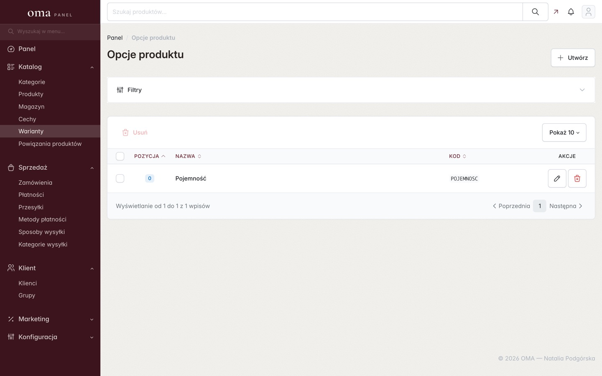
Tworzysz tu rodzaj wyboru (np. „Pojemność") wraz z listą możliwych wartości („30 ml", „50 ml"). Potem, przy tworzeniu produktu konfigurowalnego, wskazujesz tę opcję, a sklep wygeneruje osobne wersje produktu — każda z własną ceną i własnym stanem magazynowym.
Powiązania to sekcje „Może Ci się spodobać" na stronie produktu. Tutaj tworzysz rodzaj takiej sekcji, np. „Podobne produkty" albo „Komplet z…".
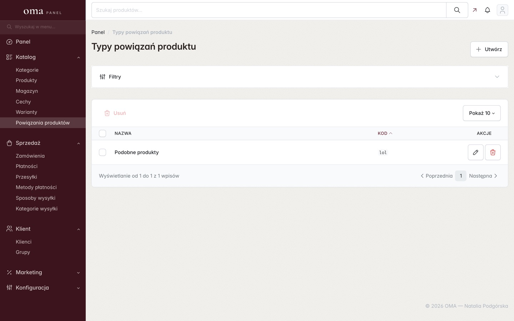
Sam wybór konkretnych produktów robisz w Produkty → edycja → zakładka Powiązania. Tutaj powstaje tylko nagłówek sekcji.
Serce codziennej pracy. Tu trafia każdy zakup zrobiony w sklepie.
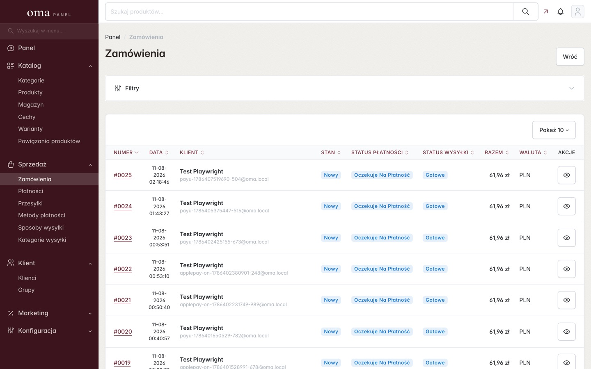
| Kolumna | Co oznacza |
|---|---|
| Stan | Ogólny etap zamówienia: Nowy → Zrealizowane → Anulowane. |
| Status płatności | Oczekuje na płatność — pieniądze jeszcze nie doszły. Zapłacone — możesz wysyłać. Zwrócone — pieniądze wróciły do klienta. |
| Status wysyłki | Gotowe — czeka na nadanie. Wysłane — paczka poszła. |
Kliknij numer zamówienia (np. #0025) lub ikonę oka po prawej.
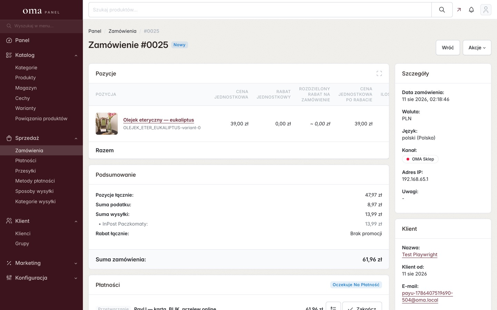
| Sekcja | Co zawiera |
|---|---|
| Pozycje | Co klient kupił, w jakiej ilości i za ile. |
| Podsumowanie | Rozbicie kwoty: wartość towaru, podatek, koszt wysyłki, rabaty i suma końcowa. |
| Płatności | Metoda płatności i jej stan. Tu jest też przycisk ręcznego oznaczenia jako opłacone. |
| Szczegóły (prawa kolumna) | Data, waluta, język, kanał sprzedaży, adres IP oraz uwagi klienta. |
| Klient (prawa kolumna) | Imię, nazwisko, e-mail i link do karty klienta. |
| Adresy | Adres dostawy i adres do faktury. |
W prawym górnym rogu, kryje najważniejsze operacje: anulowanie zamówienia, wysłanie e-maila potwierdzającego, pobranie faktury (jeśli jest włączona), zmianę adresu.
To samo, co zamówienia, ale z perspektywy pieniędzy. Jedna lista wszystkich wpłat — przydatna, gdy chcesz sprawdzić, co się faktycznie zaksięgowało.
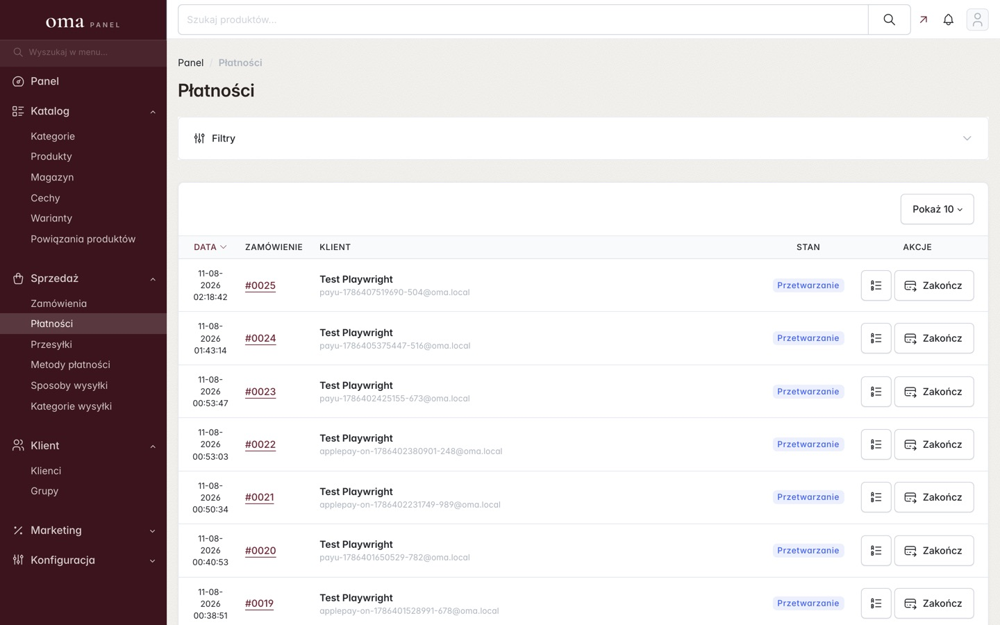
Widzisz numer zamówienia, kwotę, metodę płatności i stan. Ikona oka prowadzi do zamówienia, którego dotyczy dana wpłata.
Lista paczek do nadania i już nadanych.
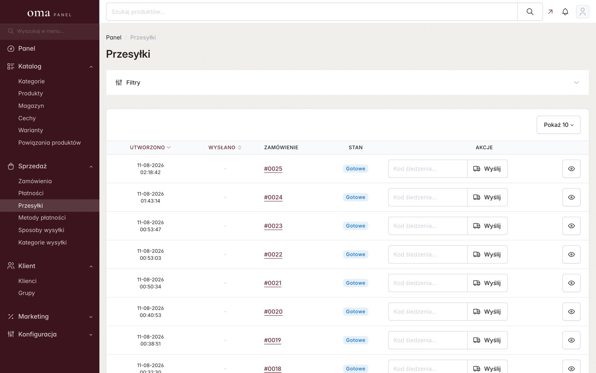
Przy każdej pozycji jest numer zamówienia, sposób dostawy i stan. Wiersze w stanie Gotowe to paczki czekające na nadanie. Po nadaniu użyj przycisku Wyślij — status zmieni się na „Wysłane", a klient dostanie powiadomienie e-mailem.
Lista sposobów, na jakie klient może zapłacić. To ustawienie, nie codzienna praca — zaglądasz tu rzadko.
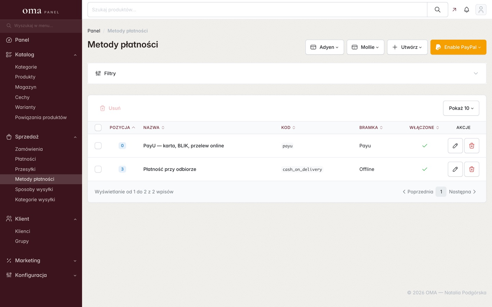
| Metoda | Opis |
|---|---|
| PayU — karta, BLIK, przelew online | Płatność internetowa. Klient wybiera BLIK, kartę albo przelew; pieniądze potwierdzają się automatycznie i zamówienie samo dostaje status „Zapłacone". |
| Płatność przy odbiorze | Klient płaci gotówką lub kartą na miejscu. Status opłacenia musisz ustawić ręcznie. |
Przyciski Adyen, Mollie i Enable PayPal u góry to propozycje podłączenia kolejnych operatorów płatności. Nie są potrzebne do działania sklepu — możesz je zignorować.
Formy dostawy, które klient wybiera w koszyku, wraz z ich cenami.
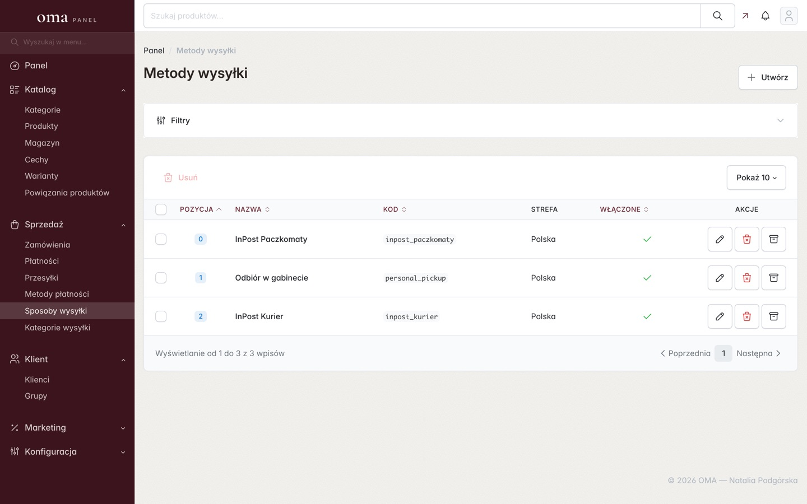
| Sposób | Opis |
|---|---|
| InPost Paczkomaty | Dostawa do paczkomatu. |
| Odbiór w gabinecie | Klient odbiera osobiście — zwykle bez opłaty. |
| InPost Kurier | Dostawa kurierem pod adres. |
Zmiana działa od razu — kolejny klient zobaczy w koszyku nową cenę. Zamówienia już złożone zachowują starą.
Grupy produktów o podobnych wymaganiach transportowych — np. „Standardowa", „Delikatne szkło", „Gabaryt".
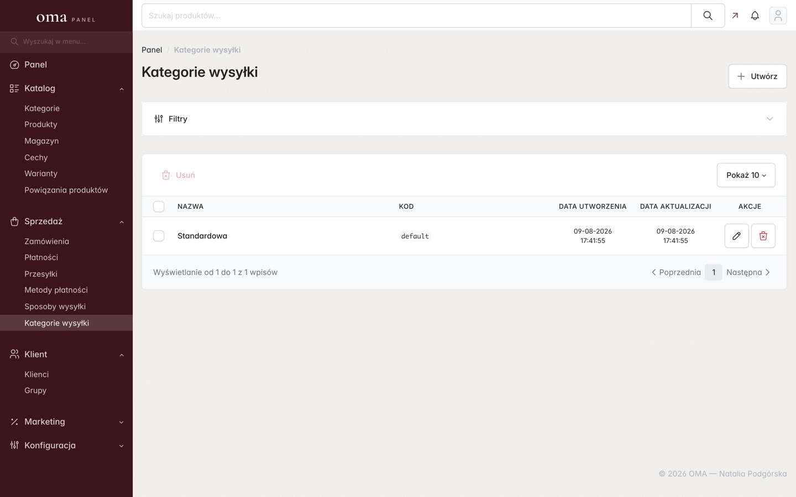
Kategorię przypisujesz produktowi w zakładce Wysyłka. Dzięki temu można ustawić inny koszt dostawy dla różnych grup towarów.
Baza osób, które kupiły coś w sklepie lub założyły konto.
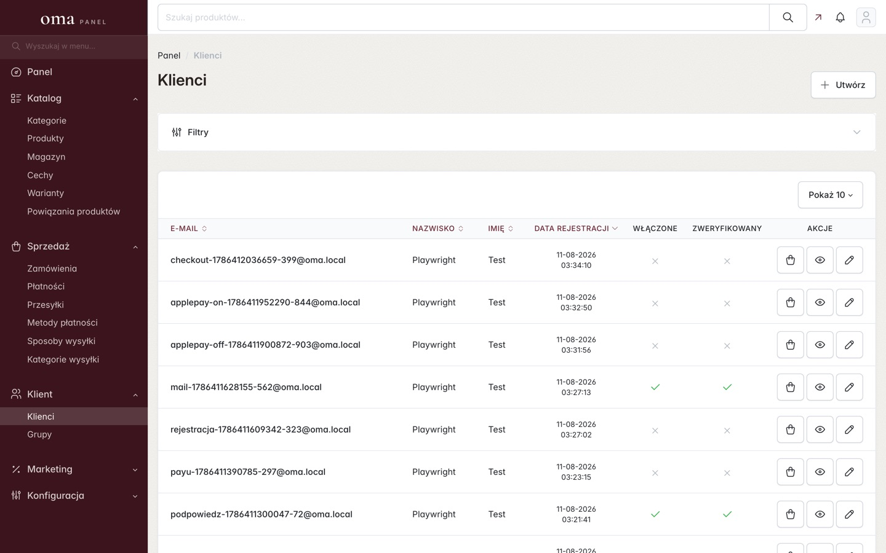
| Kolumna | Znaczenie |
|---|---|
| Adres, na który idą potwierdzenia zamówień. | |
| Imię, Nazwisko | Puste, jeśli ktoś kupił jako gość i nie podał danych. |
| Data rejestracji | Kiedy klient pojawił się w bazie. |
| Włączone | Czy konto działa. Wyłączone konto = brak możliwości zalogowania. |
| Zweryfikowany | Czy klient potwierdził adres e-mail klikając w link z wiadomości powitalnej. |
Ikona oka otwiera kartę klienta: dane kontaktowe, adresy oraz historię wszystkich jego zamówień. To najszybszy sposób sprawdzenia, co ktoś u Ciebie kupował.
Grupy pozwalają podzielić klientów na kategorie — np. „Stali pacjenci" — i przygotować promocję działającą tylko dla nich.
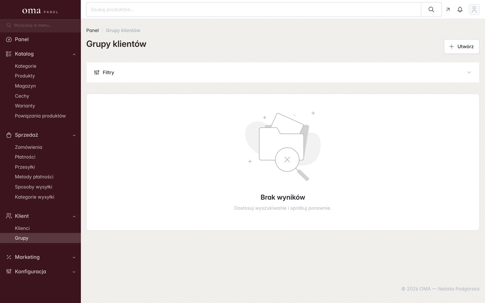
Utworzoną grupę przypisujesz klientowi w jego karcie (Klienci → edycja). Przy tworzeniu promocji można wtedy wskazać, że dotyczy tylko wybranej grupy.
Rabaty naliczane przy podsumowaniu koszyka — od całości zamówienia. To tu tworzy się kody rabatowe.
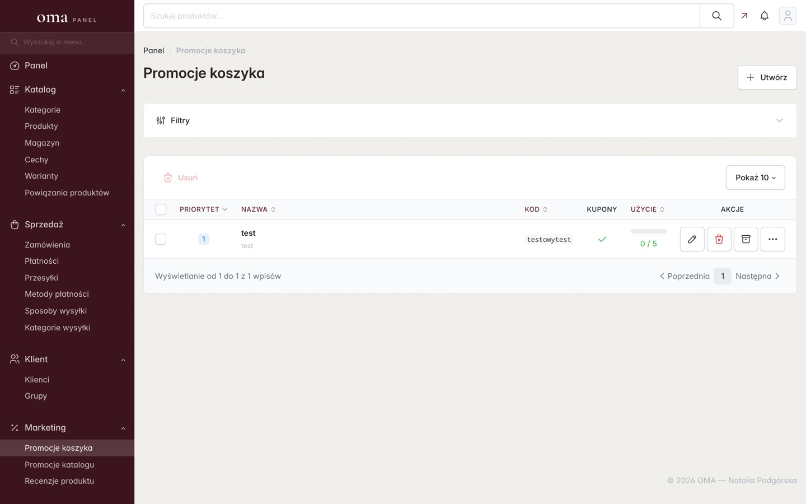
WIOSNA.| Kolumna | Znaczenie |
|---|---|
| Priorytet | Kolejność naliczania, gdy pasuje kilka promocji naraz. Wyższa liczba liczy się pierwsza. |
| Kupony | Ptaszek oznacza promocję z kodem rabatowym — klient musi wpisać hasło w koszyku. Bez ptaszka rabat nalicza się każdemu automatycznie. |
| Użycie | Ile razy promocja została wykorzystana i ile razy może jeszcze zadziałać, np. 0 / 5. |
Formularz ma trzy części:
Obniżki cen widoczne od razu przy produkcie, jeszcze zanim klient cokolwiek doda do koszyka — czyli klasyczna wyprzedaż z przekreśloną ceną.
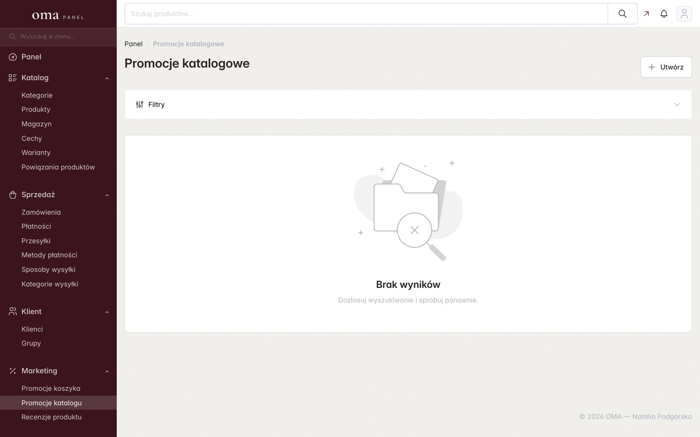
| Promocje katalogu | Promocje koszyka |
|---|---|
| Zmieniają cenę produktu na liście i na jego stronie. | Naliczają się dopiero w koszyku. |
| Bez kodów rabatowych. | Mogą wymagać kodu. |
| Dotyczą wybranych produktów lub kategorii. | Dotyczą całego zamówienia. |
Przy tworzeniu wskazujesz zakres (które produkty lub kategorie), wielkość obniżki (procent lub kwota) i daty obowiązywania.
Opinie wystawiane przez klientów — ocena w gwiazdkach plus komentarz.
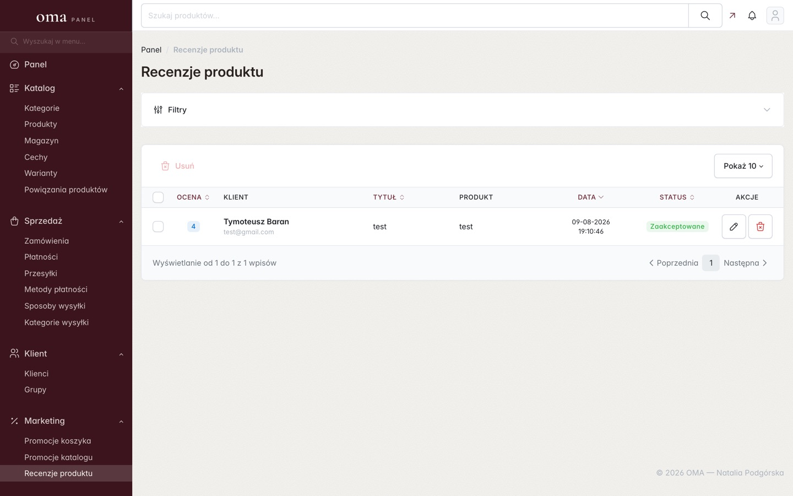
| Kolumna | Znaczenie |
|---|---|
| Ocena | Liczba gwiazdek, od 1 do 5. |
| Klient | Kto wystawił opinię. |
| Tytuł | Nagłówek recenzji. |
| Produkt | Czego dotyczy. |
| Status | Zaakceptowane — widoczna w sklepie. Nowa — czeka na decyzję. Odrzucone — ukryta. |
Recenzje można usunąć ikoną kosza, ale nie da się ich edytować — i słusznie, bo to wypowiedź klienta.
Przeliczniki między walutami — potrzebne wyłącznie w sklepie sprzedającym w więcej niż jednej walucie.
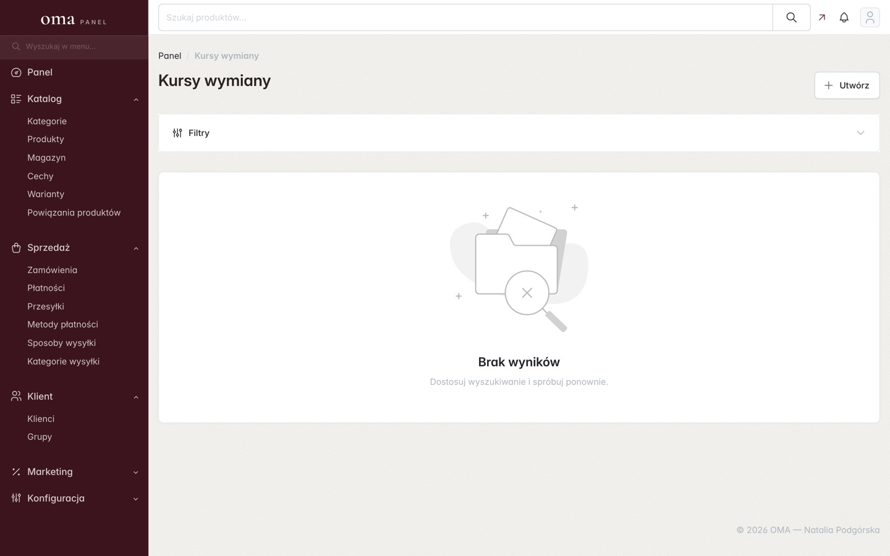
Języki, w których działa sklep. Obecnie jest jeden: polski (Polska).
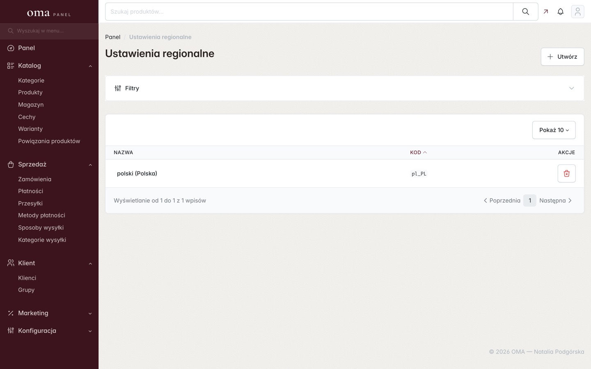
Grupy produktów objętych tą samą stawką podatku. To one pojawiają się do wyboru w zakładce Podatki przy produkcie.
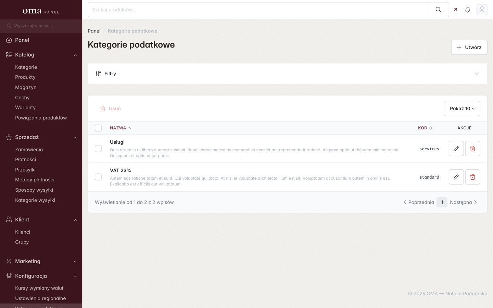
| Kategoria | Do czego służy |
|---|---|
| VAT 23% | Produkty fizyczne — olejki, kosmetyki. |
| Usługi | Vouchery i usługi gabinetu. |
Sama kategoria nie zawiera procentu — mówi tylko „ta grupa produktów jest opodatkowana osobno". Wysokość stawki ustawia się w następnym rozdziale.
Konkretne procenty przypisane do kategorii podatkowych i do obszaru sprzedaży.
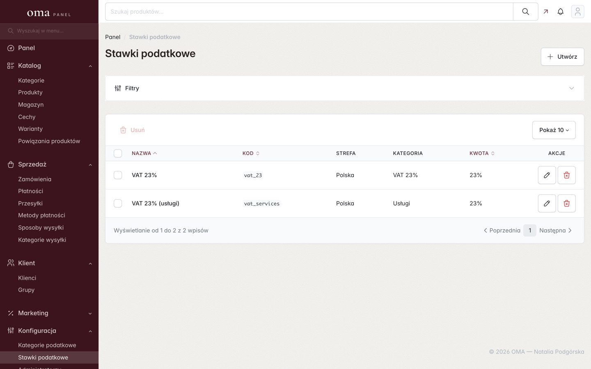
Obie stawki wynoszą 23% i obowiązują w strefie „Polska" — jedna dla kategorii VAT 23%, druga dla Usługi.
Konta osób mających dostęp do panelu. To nie są klienci sklepu — ci są w zupełnie innej sekcji (rozdział 17).
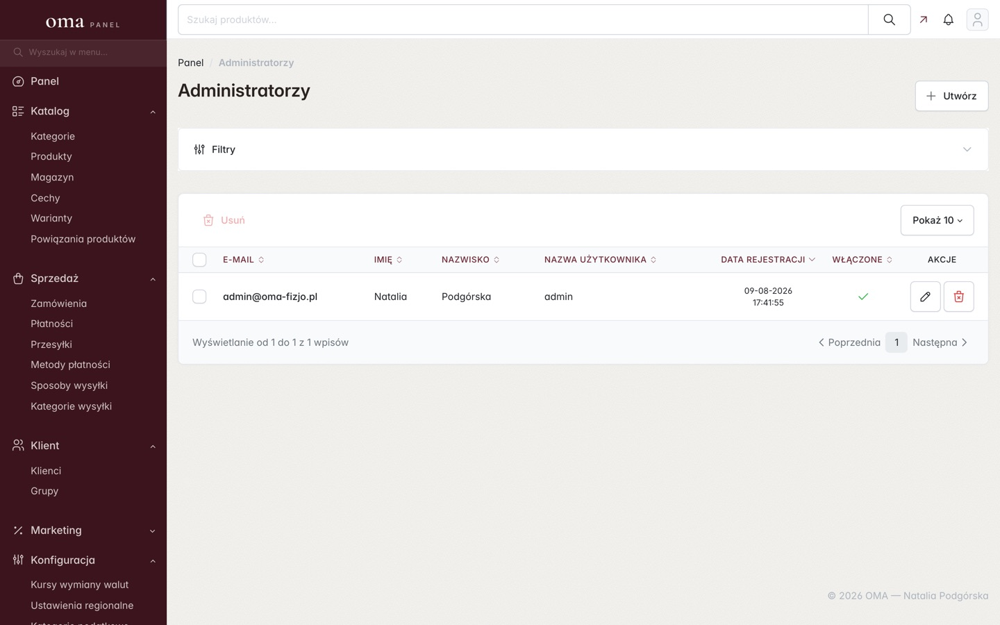
Kliknij ikonę ołówka przy swoim koncie, wpisz nowe hasło w obu polach i zapisz przyciskiem Aktualizuj.
Narzędzie zrobione specjalnie dla OMA. Pozwala poprawiać teksty na stronie wizytówce — tej z opisem gabinetu, cennikiem i kontaktem — bezpośrednio na podglądzie, bez znajomości czegokolwiek technicznego.
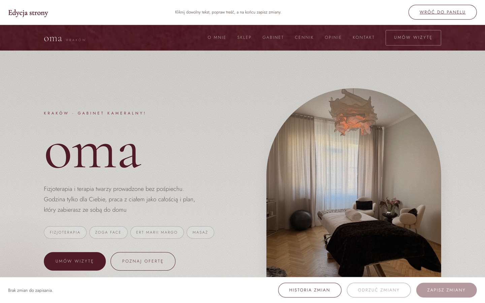
| Przycisk | Co robi |
|---|---|
| Zapisz zmiany | Publikuje poprawki na żywej stronie. |
| Odrzuć zmiany | Kasuje wszystko, co zmieniłaś od ostatniego zapisu. Strona wraca do poprzedniej treści. |
| Historia zmian | Otwiera listę wcześniejszych wersji strony. |
| Wróć do panelu | Wyjście z trybu edycji (u góry po prawej). |
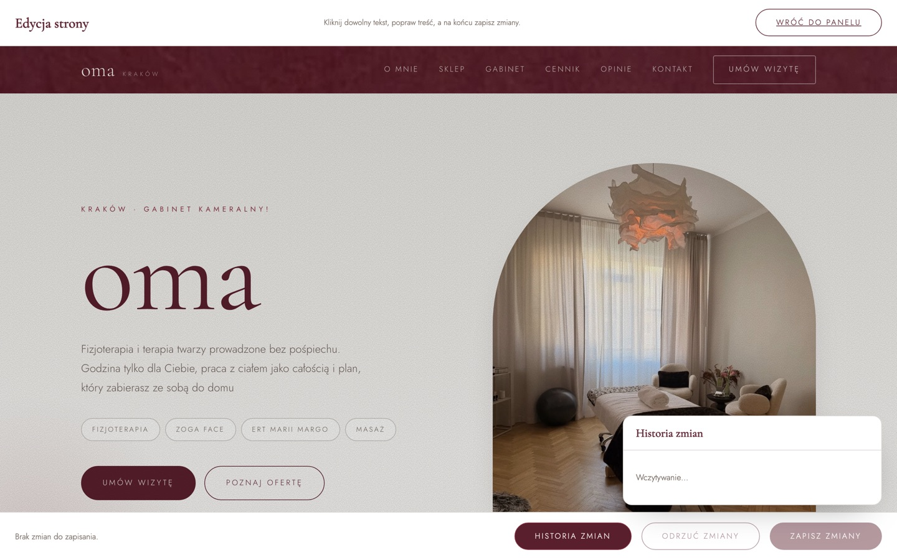
Każdy zapis zostawia ślad: data, godzina, kto zapisał i ile pól zmienił. Wersja oznaczona etykietą „wersja aktualna" to ta, którą widzą teraz odwiedzający. Przycisk Przywróć przy dowolnym wpisie cofa stronę do tamtej treści.
| Chcę… | Idę do… |
|---|---|
| Dodać nowy produkt do sklepu | Katalog → Produkty → Utwórz → Prosty produkt |
| Zmienić cenę produktu | Katalog → Produkty → ołówek → zakładka Ceny |
| Chwilowo ukryć produkt | Katalog → Produkty → ołówek → Ogólne → wyłącz Dostępny |
| Zmienić zdjęcie produktu | Katalog → Produkty → ołówek → zakładka Media |
| Poprawić opis produktu | Katalog → Produkty → ołówek → zakładka Tłumaczenia |
| Uzupełnić stan magazynowy po dostawie | Katalog → Produkty → ołówek → zakładka Magazyn |
| Dodać nowy dział sklepu | Katalog → Kategorie → wypełnij formularz → Utwórz |
| Sprawdzić, co mam wysłać | Sprzedaż → Zamówienia (status płatności: Zapłacone) |
| Oznaczyć paczkę jako nadaną | Sprzedaż → Przesyłki → Wyślij |
| Sprawdzić, czy klient zapłacił | Sprzedaż → Płatności |
| Zmienić koszt dostawy | Sprzedaż → Sposoby wysyłki → ołówek |
| Zobaczyć historię zakupów klienta | Klient → Klienci → ikona oka |
| Zrobić kod rabatowy | Marketing → Promocje koszyka → Utwórz |
| Zrobić wyprzedaż z przekreśloną ceną | Marketing → Promocje katalogu → Utwórz |
| Usunąć nieprzyzwoitą opinię | Marketing → Recenzje produktu → kosz |
| Poprawić tekst na stronie gabinetu | Konfiguracja → Edycja strony |
| Cofnąć zmianę na stronie gabinetu | Konfiguracja → Edycja strony → Historia zmian → Przywróć |
| Dodać drugą osobę do panelu | Konfiguracja → Administratorzy → Utwórz |
| Zmienić swoje hasło | Konfiguracja → Administratorzy → ołówek przy swoim koncie |
Panel jest bezpieczny — trudno zepsuć w nim coś przypadkiem. Jest jednak kilka miejsc, w których zmiana ma większe skutki, niż się wydaje.
| Miejsce | Dlaczego ostrożnie |
|---|---|
| Kody produktów i kategorii | To identyfikatory. Zmiana kodu istniejącej pozycji potrafi zerwać powiązania z historią zamówień. |
| Slug produktu | Zmiana unieważnia dotychczasowy link do produktu. |
| Stawki podatkowe | Wpływają na wszystkie ceny i dokumenty. Tylko po ustaleniu z księgową. |
| Ustawienia bramki PayU | Pola z kluczami w edycji metody płatności. Ich zmiana zatrzymuje płatności w sklepie. |
| Usuwanie kont administratorów | Skasowanie ostatniego konta odcina dostęp do panelu. |
| Dodanie drugiego języka | Wymaga przetłumaczenia wszystkich produktów i kategorii, inaczej sklep pokazuje puste miejsca. |
| Kosz przy zamówieniach i klientach | Usunięcie kasuje historię bezpowrotnie. Do ukrywania rzeczy służy wyłączanie, nie kasowanie. |